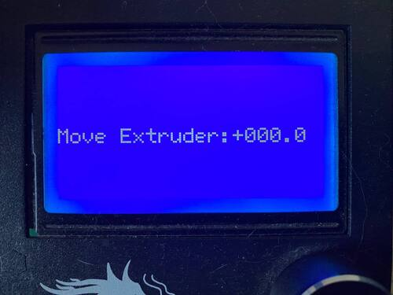

Extruder steps/mm calculator
Tutorial (marlin version)
Based on tutorial : Extruder Calibration: How to Calibrate E-Steps
With a caliper, mesure 120 mm on the filament before the extruder and put a mark on it.
Go to the printer interface and extrude 100 mm.
At the end of the extrusion, mesure the distance between the mark and the extruder.
Go to your printer extruder steps/mm configuration and note the current value.